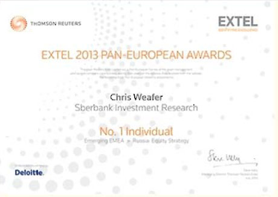
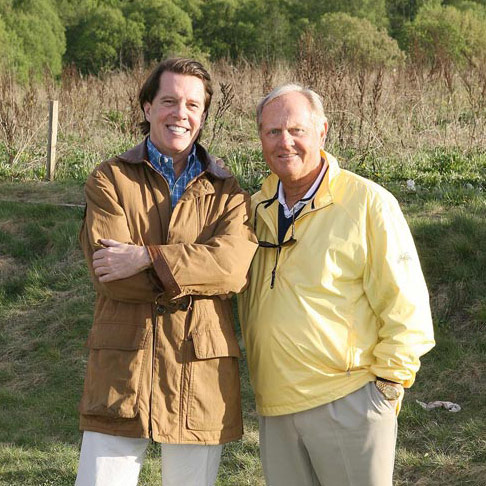

The founding partners of Macro Advisory are Chris Weafer and Vincent Gaughan who have a combined thirty-five years’ experience living and working in Russia and Central Asia. The links to the full biographies for each are below.
Who We Are
Christopher J. Weafer
Chris Weafer has worked in Russia for more than fifteen years. Most recently he was voted the best Russia investment strategist for 2013 by investors in separate polls carried out by Thomson Reuters Extel and Institutional Investor magazine.* He has regularly placed in the top three of these respective polls over the past ten years.
Read more....
Before leaving to co-found Macro Advisory, Chris held the position of Chief Strategist at Sberbank-CIB, Russia's largest bank and one of the biggest banks in Europe. Prior to that he served for four years as Chief Strategist with Uralsib Financial Corporation and for five years with Alfa Bank, two of Russia's largest privately owned financial groups. His first role in Russia was as Head of Research with Troika Dialog, a privately owned investment bank, from June 1998. He held that position for over four years.
Prior to coming to Russia Chris worked as Head of Research for NatWest Markets in Bangkok, Thailand, during the Asian financial crisis of 1997/'98. Before that he was Senior Investment Manager at the Abu Dhabi Investment Authority, one of the world's largest sovereign wealth funds, based in Abu Dhabi City. Chris started his investment career with the Irish Life Assurance Company in Dublin, Ireland, and has accumulated over thirty three years experience in emerging markets.
Chris is the author of a wide variety of published articles articles about Russia, Central Asia and the trend in macro oil. He is also widely quoted in the international financial press and appears regularly on CNN International, BBC, and Russia Today on these and related subjects.
Chris was born in Ireland.

▲
cjw@macro-advisory.com
Vincent M. Gaughan
Vincent M. Gaughan began his career in Russia in 1993 when he was appointed the first and only American attorney to a Committee of the Supreme Soviet of the Russian Federation. As counsel to the Inter- Republic Trade Committee, Mr. Gaughan assisted in drafting trade regulations among the newly Commonwealth of Independent States (CIS). Subsequently Mr. Gaughan founded and was President of The Bering Group Ltd, which acted as a liaison in the structuring and financing of various ventures between foreign companies and the Russian public and private sectors.
Read more....
The Bering Group was instrumental in the establishment of the first real time on-line national lottery in Russia. It secured the first private security license in Russia, issued by the Ministry of Internal Affairs, to Vance International, an American security company. The Bering Group also held marketing rights to the Russian Olympic Committee and logo from 1998 to 2006.
More recently Mr. Gaughan represents the American golf legend, Jack Nicklaus, in Eastern Europe, Russia and Central Asia in his golf course designing business. To date he has identified and successfully negotiated the contracts for the design of six Nicklaus Signature golf courses in Russia and Central Asia.
Mr. Gaughan holds a B.S.B.A from Georgetown University, an MBA from Babson College and a J.D. from Fordham University Law School. He served as an Assistant District Attorney for Erie County, New York and worked as a licensed stockbroker for Merrill Lynch.
Vincent was born in the United States.

Jack Nicklaus and Vincent Gaughan - walking a future Nicklaus design golf course outside of Moscow.
▲